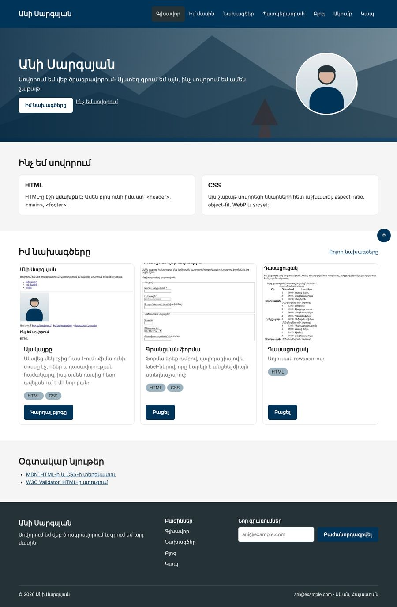
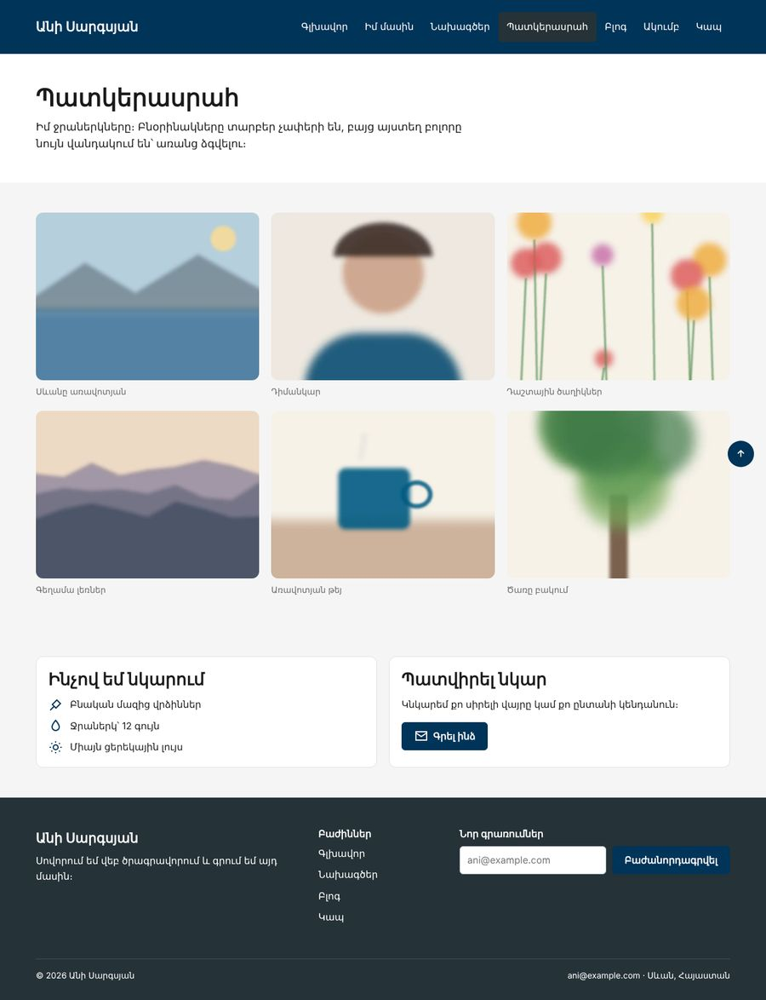

Տնային աշխատանք · HTML Դաս 16 · մինի-նախագիծ
Կայքը ստանում է պատկերասրահ տարբեր չափերի նկարներով, hero ֆոնային նկարով, WebP, srcset և inline SVG պատկերակներ։
Օգտագործիր միայն Դաս 01–16-ը։ Պատկերասրահը կառուցում ենք մեր սյուներով․ Grid-ը, որով առաջին նկարը կզբաղեցնի 2 × 2 վանդակ, Դաս 20-ում է։
Գլխավոր էջը ստանում է hero ֆոնային նկարով, իսկ կայքը՝ պատկերասրահ, որտեղ բոլորովին տարբեր չափերի վեց նկար ցուցադրվում են նույն վանդակներում՝ առանց ձգվելու։


Սկսիր Դաս 15-ի քո կայքից։ Եթե այն չունես, վերցրու Դաս 15-ի օրինակը։
.img-cover { width: 100%; height: 100%; object-fit: cover; }
.img-contain { width: 100%; height: 100%; object-fit: contain; }
.ratio-1-1 { aspect-ratio: 1 / 1; }
.ratio-4-3 { aspect-ratio: 4 / 3; }
.ratio-3-2 { aspect-ratio: 3 / 2; }
.ratio-16-9 { aspect-ratio: 16 / 9; }<picture class="card__media ratio-3-2">
<source srcset="images/project-site.webp" type="image/webp">
<img class="img-cover" src="images/project-site.jpg" alt="..." width="600" height="400" loading="lazy">
</picture>aspect-ratio-ը picture-ի վրա է, որովհետև Դաս 08-ից global.css-ում picture-ը block է։ Համեմատիր height: 200px-ի հետ՝ նեղացնելով պատուհանը։
col w-33 w-md-50 w-sm-100 սյուներում, ամեն մեկը figure + figcaptionratio-4-3 և img-cover։ Ստուգիր, որ ոչ մեկը ձգված չէcover-ը կտրում է գլուխը։ Ուղղիր object-position: top-ովloading="lazy", վերևի երեքին՝ ոչ<img class="img-cover"
src="../images/g-lake-800.jpg"
srcset="../images/g-lake-400.jpg 400w,
../images/g-lake-800.jpg 800w,
../images/g-lake-1600.jpg 1600w"
sizes="(max-width: 576px) 100vw, (max-width: 992px) 50vw, 33vw"
alt="Սևանա լիճը ջրաներկով, հեռվում՝ սարեր" width="800" height="533">DevTools → Network → Img։ Թարմացրու էջը 375px, 768px և 1280px լայնություններով և նայիր, թե որ ֆայլն է բեռնվում։ Եթե միշտ նույնն է, մաքրիր cache-ը (Ctrl+Shift+R)։
.hero {
background-image:
linear-gradient(90deg, rgba(0, 37, 63, .85), rgba(0, 37, 63, .45)),
url("../images/hero.jpg");
background-size: cover;
background-position: center;
color: #ffffff;
}Գրադիենտը և նկարը՝ մեկ background-image-ում, գրադիենտը՝ առաջինը, որ լինի վերևում։ Ուղին՝ ../images/, որովհետև CSS ֆայլը css/-ում է։ Ստուգիր տեքստի կոնտրաստը նկարի ամենաբաց մասում։
.icon {
width: 24px;
height: 24px;
fill: none;
stroke: currentColor; /* գույնը՝ տեքստից */
stroke-width: 2;
}«Պատվիրել նկար» կոճակում պատկերակը տեքստի կողքին է։ Hover-ի ժամանակ կոճակի տեքստի գույնը փոխվում է, և պատկերակը փոխվում է նրա հետ, որովհետև currentColor է։
alt, width, heightloading="lazy"picture-ովsrcset + sizes, ստուգված Network-ումcurrentColor| Սխալ | Ինչպես ուղղել |
|---|---|
aspect-ratio-ը չի աշխատում | img-ին տրված է height, կամ picture-ը inline է |
| Ֆոնային նկարը չի երևում | Ուղին images/hero.jpg է՝ առանց ../։ Ուղին հաշվվում է CSS ֆայլից |
| SVG-ի գույնը չի փոխվում | SVG-ն միացված է img-ով։ CSS-ով կարելի է գունավորել միայն inline SVG-ն |
Սրանք Դաս 16-ի տնային աշխատանքի կետերն են։ «մինի-նախագծում» նշվածները արդեն կատարել ես վերևի քայլերում, մնացածը կատարիր առանձին ֆայլերում կամ նույն թղթապանակում։
aspect-ratio + object-fit: cover-ով։ մինի-նախագծումobject-fit-ի հինգ արժեքը՝ նույն նկարով։ Նկարագրիր ամեն մեկը։cover-ը կտրում է գլուխը։ Ուղղիր object-position-ով։ մինի-նախագծումheight: 200px-ը և aspect-ratio: 4/3-ը՝ նեղացնելով պատուհանը։ Ուղարկիր երկու սքրինշոթ։background-image հատկությամբ։ մինի-նախագծումfill: currentColor-ով։ մինի-նախագծում:hover-ի ժամանակ։ մինի-նախագծումsrcset + sizes։ Ստուգիր DevTools-ով՝ որ ֆայլն է բեռնվում տարբեր լայնություններում։ մինի-նախագծումloading="lazy" ներքևի նկարներին։ Չափիր բեռնման ժամանակը DevTools → Network-ում՝ առաջ և հետո։ մինի-նախագծումԵրբ բաժին 03-ի բոլոր կետերը նշված են, բացիր օրինակը և քո էջը կողք կողքի։ Բացիր երկուսի կոդն էլ խմբագրիչում։ Գտիր մեկ բան, որ դու արել ես այլ կերպ, և մտածիր՝ որն է ավելի հասկանալի և ինչու։ Քո լուծումը կարող է տարբերվել և լինել ճիշտ։